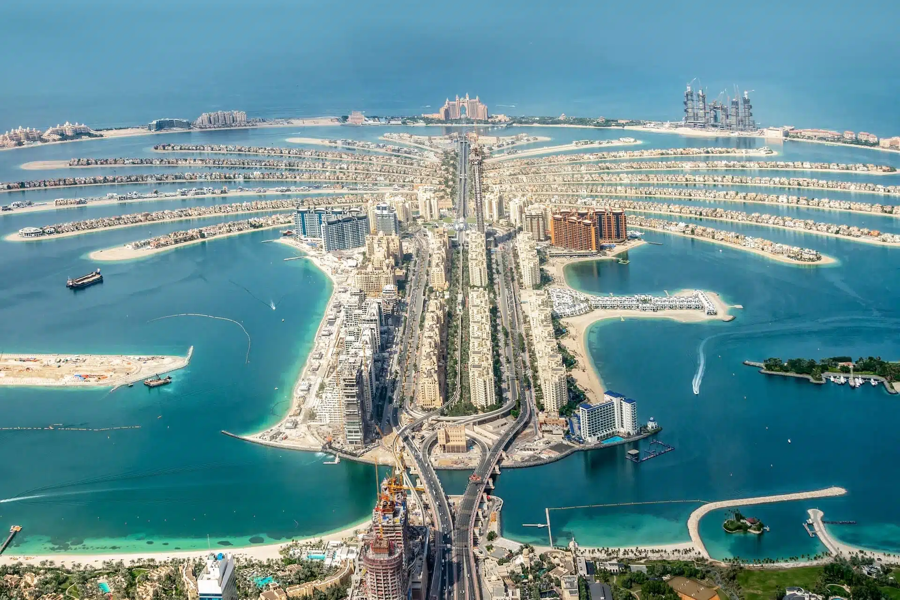

sidaan wada ognahay dalxiisku waa mid kamida waqti qaadashada ugu fcn ee aduunka in uu yahay sabtoo ah noloshu mararka qaar waxa ay u baahantahay in aya waqti sooqaadato si marki ay fasaxa ka soolaabato ay shaqadeeda ugu firfir coonaato waayio horaa waxaa looyiri nimaan dhulmarin dhaayo maleh dalxiisku waa mid kamid ah talaabooyinka ugu fcn aad naftaada kutusi karto dhul kale oo kabaxsan wadankaaga
